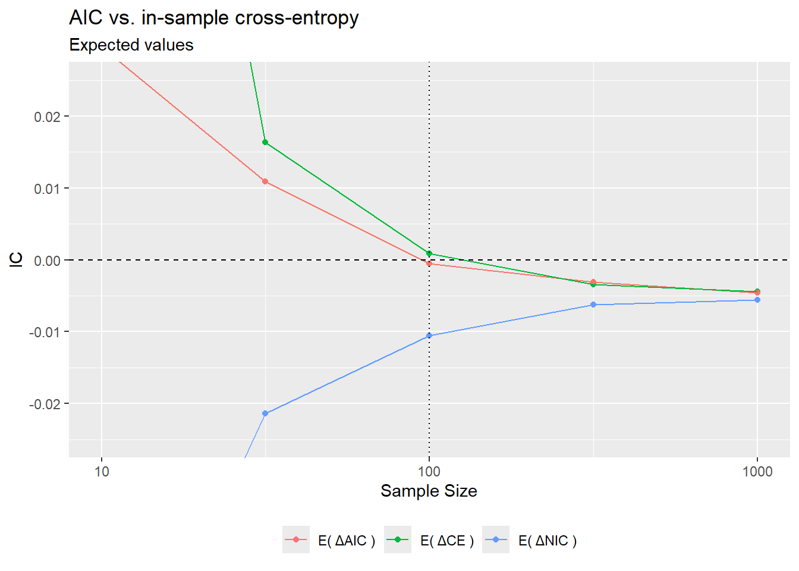
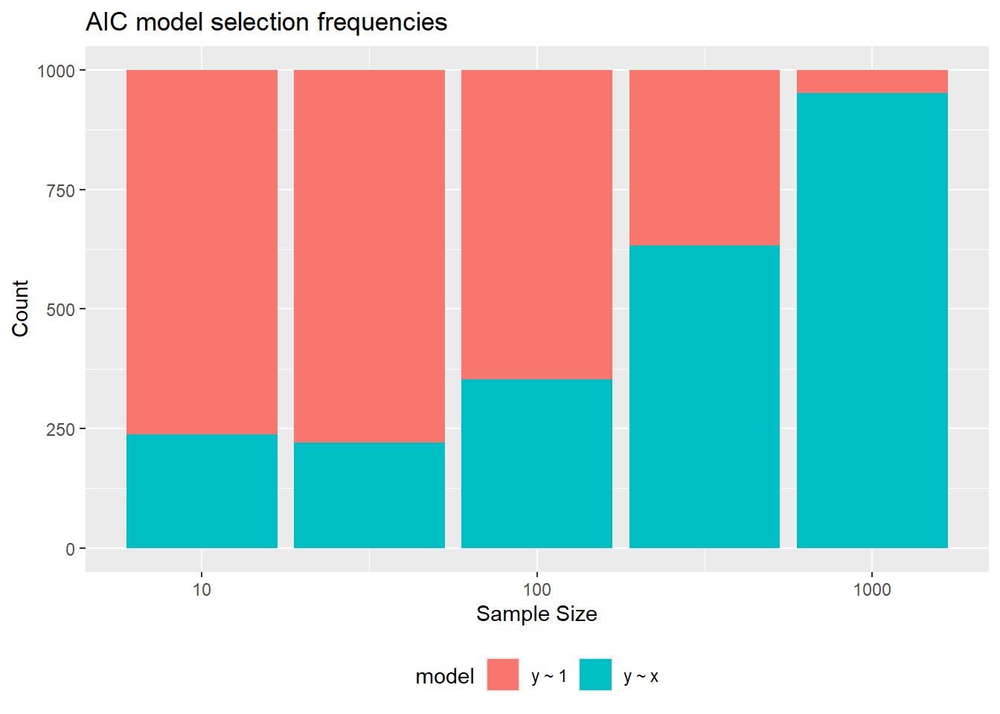
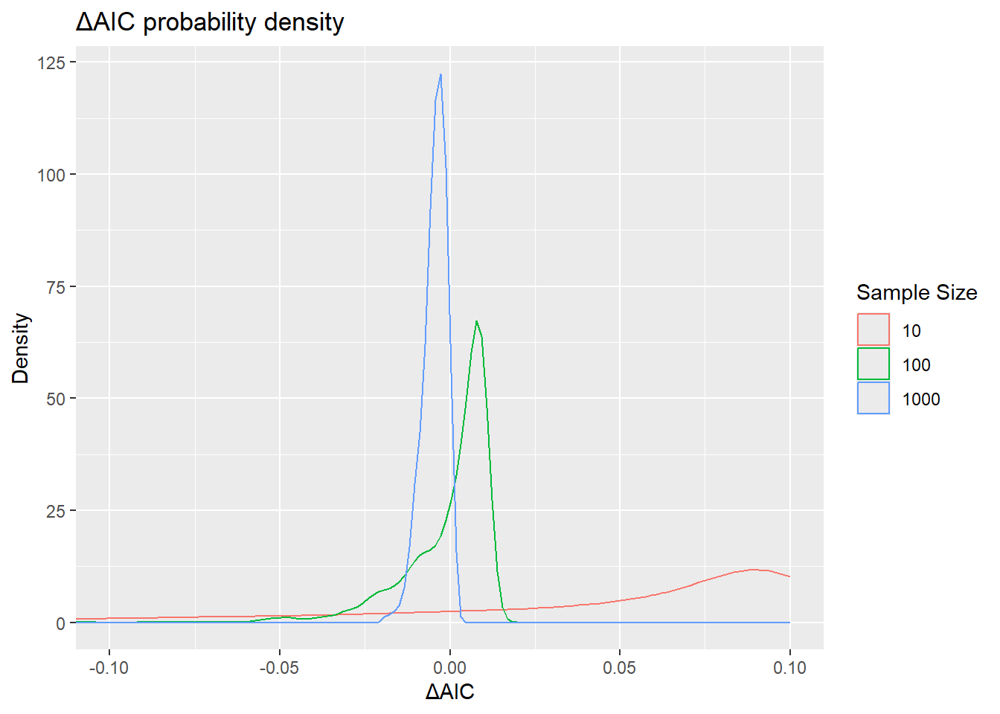
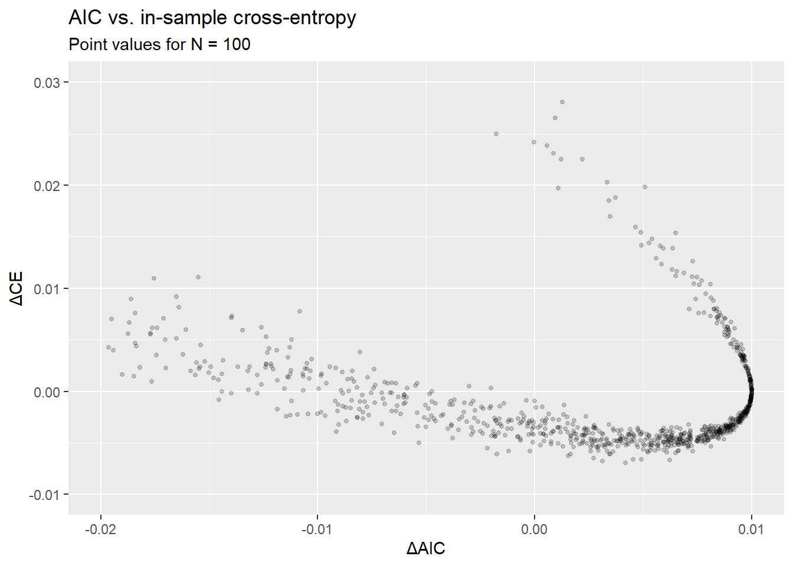

![]()
m <- 0.1
q <- 0
rxy <- function(n) {
tibble(
x = rnorm(n, sd = 1),
y = m * x + q + rnorm(n, sd = 1)
)
}Theory
AIC
Consider the AIC for the usual linear model \(Y = X\beta + \varepsilon\):
\[ \text{AIC} = \frac{1}{2}\ln(2\pi e\hat \sigma^2)+\frac{p+1}{N} \tag{1}\]
where \(p\) is the dimension of the covariate vector \(X\) and \(\hat \sigma ^2\) is the ML estimate of the \(Y\vert X\) conditional variance. The expectation of Equation 1 under model assumptions can be found by using the fact that, for a \(\chi^2\) random variable with \(\nu\) degrees of freedom1:
\[ \mathbb E(\ln\chi ^2 )=\ln2+ \psi(\frac{\nu}{2}) \tag{2}\]
where: \[ \psi(x)\equiv\frac{\text d}{\text d x}\ln \Gamma(x) \approx \ln x-\frac{1}{2x} \tag{3}\]
and the second equality results from the Stirling approximation \(\Gamma(x) = \sqrt{2\pi}x^{x-\frac{1}{2}}e^{-x}\). We obtain:
\[ \mathbb E(\text{AIC}) = \frac{\ln \left[2\pi e\mathbb V(Y\vert X)\right] }{2}+\frac{1}{2}\ln\left(\frac{N-p}{2}\right)-\frac{1}{2}\frac{1}{N-p}+\frac{p+1}{N}, \tag{4}\]
where, according to standard assumptions, \(\mathbb V(Y \vert X)\) is assumed to be constant in \(X\).
Now consider two such models, with different covariate vectors \(X_1\) and \(X_2\), of dimension \(p_1\) and \(p_2\) respectively, both assumed to be well specified. Denote, as before:
\[ \text{AIC}_i =\frac{1}{2}\ln(2\pi e\hat \sigma^2_i)+\frac{p_i+1}{N} \tag{5}\]
for \(i = 1,\,2\). Equation 4 gives the unconditional expectation of \(\text{AIC}\) for both models2, so that:
\[ \mathbb E(\text{AIC}_1 - \text{AIC}_2) = \frac{1}{2}\ln\left(\frac{\mathbb V(Y\vert X_1)}{\mathbb V(Y\vert X_2)}\right)+\frac{p_1-p_2}{2N}+\mathcal O(N^{-2}). \tag{6}\]
Assuming, without loss of generality, that \(p_1 \leq p_2\), we have:
\[ \mathbb E(\text{AIC}_1 - \text{AIC}_2) < 0 \iff N < \frac{p_2-p_1}{\ln\left(\frac{\mathbb V(Y\vert X_1)}{\mathbb V(Y\vert X_2)}\right)}. \tag{7}\]
To gain some intuition, suppose that the set of variables contained in \(X_1\) is a subset of those contained in \(X_2\), so that the two corresponding models are nested. Equation 7 tells us that, for \(N\) below a certain threshold, AIC will prefer the more “parsimonious” model involving \(X_1\) only. In particular, if \(\mathbb V(Y\vert X_1)\approx \mathbb V(Y\vert X_2)\), we can make a first-order approximation in the RHS of Equation 7, that yields:
\[ N \lesssim \frac{\mathbb V(Y\vert X_2)}{\mathbb V(Y\vert X_1)-\mathbb V(Y\vert X_2)}(p_2-p_1). \tag{8}\]
Cross-entropy
In parallel to AIC, we can consider the exact “information criterion” provided by the model in-sample cross-entropy under the true data generating process. For a single linear model, the in-sample cross-entropy is:
\[ \text{CE}_{\text {in}} = \frac{1}{2}\ln(2\pi e \hat \sigma ^2) +\frac{1}{2}\frac{\sigma ^2-\hat \sigma ^2+\frac{1}{N}(\beta-\hat{\beta})^{T}\mathbf{X}^{T}\mathbf{X}(\beta-\hat{\beta})}{\hat \sigma ^2}. \tag{9}\]
(“in-sample” refers to the fact that we fix, i.e. condition, on the covariate vector of the training sample, \(\mathbf X\).) The \(\mathbf X\) conditional expectation of \(\text{CE}_{\text {in}}\), again under model assumptions, can be computed by noticing two facts:
- The numerator and denominator are conditionally independent \(\chi^2\) variables with \(p\) and \(N-p\) degrees of freedom respectively. This can be seen by rewriting these as \(\boldsymbol \epsilon ^T \mathbf H \boldsymbol \epsilon\), and \(\boldsymbol \epsilon ^T (1-\mathbf H) \boldsymbol \epsilon\), respectively, where \(\mathbf H = \mathbf X (\mathbf X ^T \mathbf X)^{-1} \mathbf X ^T\) as usual.
- For a \(\chi ^2\) random variable with \(\nu\) degrees of freedom we have \(\mathbb E(\frac{1}{\chi ^2})=\frac{1}{\nu - 2}\).
Using these results, we can show that:
\[ \mathbb E(\text{CE}_{\text {in}}\vert \mathbf X)=\mathbb E(\text{AIC}\vert \mathbf X)+\mathcal O(N^{-2}) \tag{10}\]
(an equation which is true by design of AIC).
Before rushing to the (wrong) conclusion that \(\text{AIC}_1 - \text{AIC}_2\) will correspondingly estimate a difference of expected cross-entropies, let us notice that the relevant in-sample cross-entropy to be considered for model evaluation is Equation 9 with \(\mathbf X\) corresponding to the full covariate vector: this is the target we should try to estimate (at least to the extent that our goal is predicting \(Y\) given \(X\)). For this reason, strictly speaking, Equation 10 is exact only if our model is well specified as a model of \(Y \vert X\). Otherwise, in order to estimate consistently \(\mathbb E(\text{CE}_{\text {in}}\vert \mathbf X)\), we should use Takeuchi’s Information Criterion (TIC) rather than AIC.
A bit more pragmatically, in the real world we could assume the remainder of Equation 10 to be \(\mathcal O (N^{-1})\) (rather than \(\mathcal O (N^{-2})\)), but generally small with respect the leading order AIC correction (\(\frac{p+1}{N}\)). This will be the case if the models being compared are approximately well specified.
Simulation
Setup
We take the data generating process to be:
\[ Y = m X + q + \varepsilon, \tag{11}\]
with:
\[ X \sim \mathcal N (0,\,1),\quad \varepsilon \sim \mathcal N(0,\,1),\quad \varepsilon \perp X. \tag{12}\]
We compare the model with vs. without slope term (\(m = 0\) vs. \(m \neq 0\)), which we will denote by suffixes \(1\) and \(1\oplus X\), respectively. The functions below compute AIC and in-sample cross-entropy from the corresponding lm objects. We also define a “Naive Information Criterion” \(\text{NIC} \equiv \log(\hat \sigma)\).
nic <- function(fit) {
p <- length(coef(fit))
n <- nobs(fit)
sigma_hat <- sigma(fit) * sqrt((n - p) / n)
log(sigma_hat)
}
aic <- function(fit) {
p <- length(coef(fit))
n <- nobs(fit)
sigma_hat <- sigma(fit) * sqrt((n - p) / n)
log(sigma_hat) + (p + 1) / n + 0.5 *(1 + log(2*pi))
}
ce <- function(fit, data) {
p <- length(coef(fit))
n <- nobs(fit)
sigma_hat <- sigma(fit) * sqrt((n - p) / n)
y_hat <- fitted(fit)
mu <- data$x * m + q
res <- 0
res <- res + 0.5 / (sigma_hat^2)
res <- res + log(sigma_hat)
res <- res + mean(0.5 * (y_hat - mu)^2 / (sigma_hat^2))
res <- res + 0.5 * log(2 * pi)
return(res)
}From our results above, we expect:
\[ \mathbb E(\text{AIC}_{1\oplus X}-\text{AIC}_{1} )<0 \iff N \geq \frac{1}{\ln(1+m^2)}\left(1+\mathcal O(m^2 )\right) \tag{13}\]
The expected in-sample cross-entropies cannot be computed explicitly, but for relatively small \(m^2\) we expect (cf. Equation 10):
\[ \mathbb E((\text{CE}_{\text {in}})_i)=\mathbb E(\text{AIC}_i)+\mathcal O(N^{-2},\,m^2N^{-1}), \tag{14}\]
I will use tidyverse for plotting results.
library(dplyr)
library(ggplot2)In order to make results reproducible let’s:
set.seed(840)Results
We simulate fitting models \(1\) and \(1\oplus X\) at different sample sizes from the data generating process described above.
fits <- tidyr::expand_grid(
n = 10 ^ seq(from = 1, to = 3, by = 0.5), b = 1:1e3
) |>
mutate(data = lapply(n, rxy)) |>
group_by(n, b, data) |>
tidyr::expand(model = c(y ~ 1, y ~ x)) |>
ungroup() |>
mutate(
fit = lapply(row_number(), \(i) lm(model[[i]], data = data[[i]])),
ce = sapply(row_number(), \(i) ce(fit[[i]], data[[i]])),
aic = sapply(fit, aic),
nic = sapply(fit, nic),
model = format(model)
) |>
select(-c(fit, data))The plots below show the dependence from sample size of \(\mathbb E(\Delta\text{AIC})\) and \(\mathbb E(\Delta\text{CE}_\text{in})\), as well as AIC selection frequencies. Notice that for \(N = \frac{1}{m^2}\), even though \(\mathbb E(\Delta\text{AIC}) = 0\), the selection frequency of the “complex” model \(1\oplus X\) is still below \(\text{50 %}\). This is because the distribution of \(\Delta\text{AIC}\) is asymmetric, as seen in the second plot, and \(\mathbb E(\Delta\text{AIC}) < \text {median}(\Delta\text{AIC})\).
fits |>
mutate(
is_baseline = model == "y ~ 1",
delta_ce = ce - ce[is_baseline],
delta_aic = aic - aic[is_baseline],
delta_nic = nic - nic[is_baseline],
.by = c(n, b),
) |>
filter(!is_baseline) |>
summarise(
`E( ΔCE )` = mean(delta_ce),
`E( ΔAIC )` = mean(delta_aic),
`E( ΔNIC )` = mean(delta_nic),
.by = n
) |>
tidyr::pivot_longer(
-n, names_to = "metric", values_to = "value"
) |>
ggplot(aes(x = n, y = value, color = metric)) +
geom_point() +
geom_line() +
geom_hline(yintercept = 0, linetype = "dashed") +
geom_vline(aes(xintercept = 1 / m^2), linetype = "dotted") +
scale_x_log10("Sample Size") +
coord_cartesian(ylim = c(-0.025, 0.025)) + ylab(expression(IC)) +
theme(legend.position = "bottom", legend.title = element_blank()) +
ggtitle("AIC vs. in-sample cross-entropy", "Expected values") +
NULL
fits |>
filter(aic == min(aic), .by = c(n, b)) |>
summarise(count = n(), .by = c(n, model)) |>
ggplot(aes(fill = model, x = n, y = count)) +
geom_col() +
scale_x_log10("Sample Size") +
ylab("Count") +
theme(legend.position = "bottom") +
ggtitle("AIC model selection frequencies")
fits |>
filter(n %in% c(10, 100, 1000)) |>
mutate(delta_aic = aic - aic[model == "y ~ 1"], .by = c(n, b)) |>
filter(model != "y ~ 1") |>
mutate(expec = -0.5 * log(1 + m^2) + 0.5 / n) |>
ggplot(aes(x = delta_aic, color = as.factor(n))) +
geom_density() +
coord_cartesian(xlim = c(-0.1, NA)) +
labs(x = "ΔAIC", y = "Density", color = "Sample Size") +
ggtitle("ΔAIC probability density")
Finally, here is something I have no idea where it comes from. The plot below shows the scatterplot of in-sample cross-entropy differences vs. the AIC differences. It is well known that AIC only estimates the expectation of these differences, averaged over potential training samples. One may ask whether AIC has anything to say about the actual cross-entropy difference for the estimated models, conditional on the realized training sample.
Assuming I have made no errors here, the tilted-U shape of this scatterplot is a clear negative answer. What’s especially interesting is that, apparently, these differences have a negative correlation. I fail to see where do the negative correlation and the U-shape come from.
fits |>
filter(n == 100) |>
mutate(
is_baseline = model == "y ~ 1",
delta_ce = ce - ce[is_baseline],
delta_aic = aic - aic[is_baseline],
.by = c(n, b),
) |>
filter(!is_baseline) |>
ggplot(aes(x = delta_aic, y = delta_ce)) +
geom_point(size = 1, alpha = 0.2) +
lims(x = c(-0.02, 0.01), y = c(-0.01, 0.03)) +
labs(x = "ΔAIC", y = "ΔCE") +
ggtitle("AIC vs. in-sample cross-entropy", "Point values for N = 100") +
NULL
Footnotes
See e.g. 1503.06266↩︎
The same equation actually gives the expectation of \(\text{AIC}\) conditional to the in-sample covariate vector \(\mathbb X\). Since this conditioning differs for the two different models involving \(X_1\) and \(X_2\), in our comparison of expected values we must interpret this as unconditional expectations, in general.↩︎
Reuse
Citation
BibTeX citation:
@online{gherardi2024,
author = {Gherardi, Valerio},
title = {AIC in the Well-Specified Linear Model: Theory and
Simulation},
date = {2024-05-17},
url = {https://vgherard.github.io/posts/2024-05-09-aic-in-the-well-specified-linear-model-theory-and-simulation/},
langid = {en}
}
For attribution, please cite this work as:
Gherardi, Valerio. 2024. “AIC in the Well-Specified Linear Model:
Theory and Simulation.” May 17, 2024. https://vgherard.github.io/posts/2024-05-09-aic-in-the-well-specified-linear-model-theory-and-simulation/.